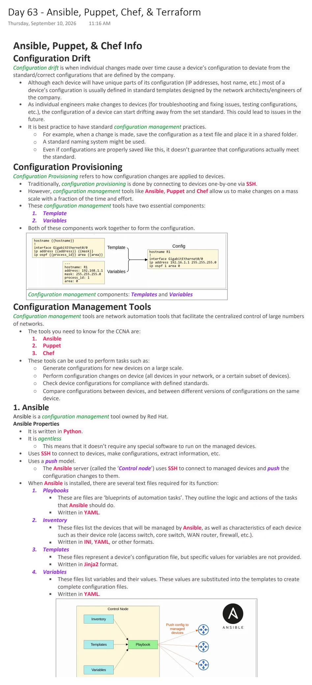
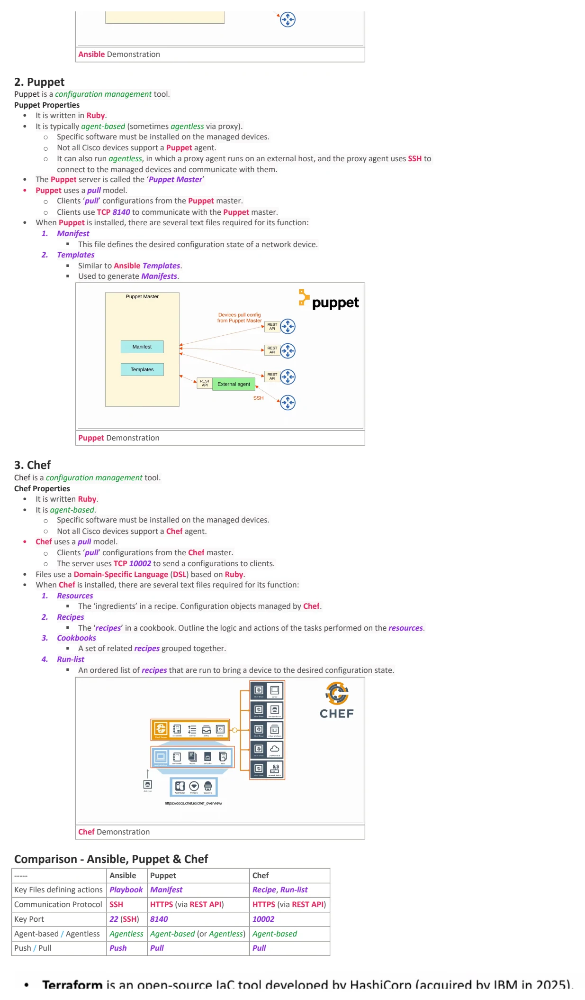
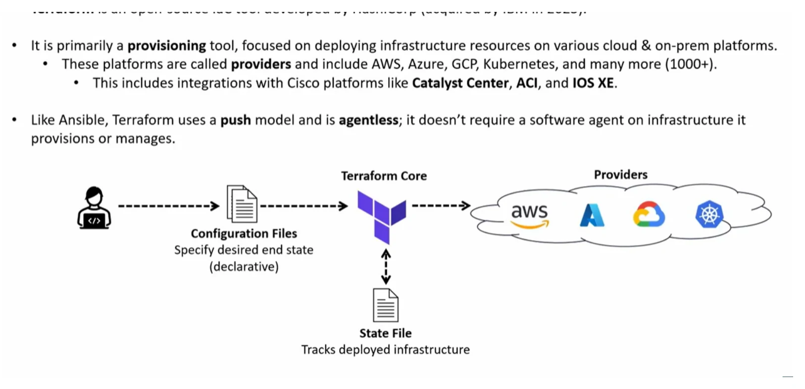

Day 63 / 63 · Network automation
Ansible, Puppet, Chef, & Terraform
Original notes and diagrams from my OneNote notebook.
Ansible, Puppet, Chef, & Terraform
Download original PDF


Text view — Ansible, Puppet, Chef, & Terraform
Extracted from the original export. Diagrams and some formatting appear in the notes above.
Day 63 - Ansible, Puppet, Chef, & Terraform Thursday, September 10, 2026 11:16 AM Ansible, Puppet, & Chef Info Configuration Drift Configuration drift is when individual changes made over time cause a device’s configuration to deviate from the standard/correct configurations that are defined by the company. • Although each device will have unique parts of its configuration (IP addresses, host name, etc.) most of a device’s configuration is usually defined in standard templates designed by the network architects/engineers of the company. • As individual engineers make changes to devices (for troubleshooting and fixing issues, testing configurations, etc.), the configuration of a device can start drifting away from the set standard. This could lead to issues in the future. • It is best practice to have standard configuration management practices. ○ For example, when a change is made, save the configuration as a text file and place it in a shared folder. ○ A standard naming system might be used. ○ Even if configurations are properly saved like this, it doesn’t guarantee that configurations actually meet the standard. Configuration Provisioning Configuration Provisioning refers to how configuration changes are applied to devices. • Traditionally, configuration provisioning is done by connecting to devices one-by-one via SSH. • However, configuration management tools like Ansible, Puppet and Chef allow us to make changes on a mass scale with a fraction of the time and effort. • These configuration management tools have two essential components: 1. Template 2. Variables • Both of these components work together to form the configuration. Configuration management components: Templates and Variables Configuration Management Tools Configuration management tools are network automation tools that facilitate the centralized control of large numbers of networks. • The tools you need to know for the CCNA are: 1. Ansible 2. Puppet 3. Chef • These tools can be used to perform tasks such as: ○ Generate configurations for new devices on a large scale. ○ Perform configuration changes on device (all devices in your network, or a certain subset of devices). ○ Check device configurations for compliance with defined standards. ○ Compare configurations between devices, and between different versions of configurations on the same device. 1. Ansible Ansible is a configuration management tool owned by Red Hat. Ansible Properties • It is written in Python. • It is agentless ○ This means that it doesn’t require any special software to run on the managed devices. • Uses SSH to connect to devices, make configurations, extract information, etc. • Uses a push model. ○ The Ansible server (called the ‘Control node’) uses SSH to connect to managed devices and push the configuration changes to them. • When Ansible is installed, there are several text files required for its function: 1. Playbooks § These are files are ‘blueprints of automation tasks’. They outline the logic and actions of the tasks that Ansible should do. § Written in YAML. 2. Inventory § These files list the devices that will be managed by Ansible, as well as characteristics of each device such as their device role (access switch, core switch, WAN router, firewall, etc.). § Written in INI, YAML, or other formats. 3. Templates § These files represent a device’s configuration file, but specific values for variables are not provided. § Written in Jinja2 format. 4. Variables § These files list variables and their values. These values are substituted into the templates to create complete configuration files. § Written in YAML. Ansible Demonstration 2. Puppet Puppet is a configuration management tool. Puppet Properties • It is written in Ruby. • It is typically agent-based (sometimes agentless via proxy). ○ Specific software must be installed on the managed devices. ○ Not all Cisco devices support a Puppet agent. ○ It can also run agentless, in which a proxy agent runs on an external host, and the proxy agent uses SSH to connect to the managed devices and communicate with them. • The Puppet server is called the ‘Puppet Master’ • Puppet uses a pull model. ○ Clients ‘pull’ configurations from the Puppet master. ○ Clients use TCP 8140 to communicate with the Puppet master. • When Puppet is installed, there are several text files required for its function: 1. Manifest § This file defines the desired configuration state of a network device. 2. Templates § Similar to Ansible Templates. § Used to generate Manifests. Puppet Demonstration 3. Chef Chef is a configuration management tool. Chef Properties • It is written Ruby. • It is agent-based. ○ Specific software must be installed on the managed devices. ○ Not all Cisco devices support a Chef agent. • Chef uses a pull model. ○ Clients ‘pull’ configurations from the Chef master. ○ The server uses TCP 10002 to send a configurations to clients. • Files use a Domain-Specific Language (DSL) based on Ruby. • When Chef is installed, there are several text files required for its function: 1. Resources § The ‘ingredients’ in a recipe. Configuration objects managed by Chef. 2. Recipes § The ‘recipes’ in a cookbook. Outline the logic and actions of the tasks performed on the resources. 3. Cookbooks § A set of related recipes grouped together. 4. Run-list § An ordered list of recipes that are run to bring a device to the desired configuration state. Chef Demonstration Comparison - Ansible, Puppet & Chef ----- Ansible Puppet Chef Key Files defining actions Playbook Manifest Recipe, Run-list Communication Protocol SSH HTTPS (via REST API) HTTPS (via REST API) Key Port 22 (SSH) 8140 10002 Agent-based / Agentless Agentless Agent-based (or Agentless) Agent-based Push / Pull Push Pull Pull Day 63 - Ansible, Puppet, Chef, & Terraform Thursday, September 10, 2026 11:16 AM Ansible, Puppet, & Chef Info Configuration Drift Configuration drift is when individual changes made over time cause a device’s configuration to deviate from the standard/correct configurations that are defined by the company. • Although each device will have unique parts of its configuration (IP addresses, host name, etc.) most of a device’s configuration is usually defined in standard templates designed by the network architects/engineers of the company. • As individual engineers make changes to devices (for troubleshooting and fixing issues, testing configurations, etc.), the configuration of a device can start drifting away from the set standard. This could lead to issues in the future. • It is best practice to have standard configuration management practices. ○ For example, when a change is made, save the configuration as a text file and place it in a shared folder. ○ A standard naming system might be used. ○ Even if configurations are properly saved like this, it doesn’t guarantee that configurations actually meet the standard. Configuration Provisioning Configuration Provisioning refers to how configuration changes are applied to devices. • Traditionally, configuration provisioning is done by connecting to devices one-by-one via SSH. • However, configuration management tools like Ansible, Puppet and Chef allow us to make changes on a mass scale with a fraction of the time and effort. • These configuration management tools have two essential components: 1. Template 2. Variables • Both of these components work together to form the configuration. Configuration management components: Templates and Variables Configuration Management Tools Configuration management tools are network automation tools that facilitate the centralized control of large numbers of networks. • The tools you need to know for the CCNA are: 1. Ansible 2. Puppet 3. Chef • These tools can be used to perform tasks such as: ○ Generate configurations for new devices on a large scale. ○ Perform configuration changes on device (all devices in your network, or a certain subset of devices). ○ Check device configurations for compliance with defined standards. ○ Compare configurations between devices, and between different versions of configurations on the same device. 1. Ansible Ansible is a configuration management tool owned by Red Hat. Ansible Properties • It is written in Python. • It is agentless ○ This means that it doesn’t require any special software to run on the managed devices. • Uses SSH to connect to devices, make configurations, extract information, etc. • Uses a push model. ○ The Ansible server (called the ‘Control node’) uses SSH to connect to managed devices and push the configuration changes to them. • When Ansible is installed, there are several text files required for its function: 1. Playbooks § These are files are ‘blueprints of automation tasks’. They outline the logic and actions of the tasks that Ansible should do. § Written in YAML. 2. Inventory § These files list the devices that will be managed by Ansible, as well as characteristics of each device such as their device role (access switch, core switch, WAN router, firewall, etc.). § Written in INI, YAML, or other formats. 3. Templates § These files represent a device’s configuration file, but specific values for variables are not provided. § Written in Jinja2 format. 4. Variables § These files list variables and their values. These values are substituted into the templates to create complete configuration files. § Written in YAML. Ansible Demonstration 2. Puppet Puppet is a configuration management tool. Puppet Properties • It is written in Ruby. • It is typically agent-based (sometimes agentless via proxy). ○ Specific software must be installed on the managed devices. ○ Not all Cisco devices support a Puppet agent. ○ It can also run agentless, in which a proxy agent runs on an external host, and the proxy agent uses SSH to connect to the managed devices and communicate with them. • The Puppet server is called the ‘Puppet Master’ • Puppet uses a pull model. ○ Clients ‘pull’ configurations from the Puppet master. ○ Clients use TCP 8140 to communicate with the Puppet master. • When Puppet is installed, there are several text files required for its function: 1. Manifest § This file defines the desired configuration state of a network device. 2. Templates § Similar to Ansible Templates. § Used to generate Manifests. Puppet Demonstration 3. Chef Chef is a configuration management tool. Chef Properties • It is written Ruby. • It is agent-based. ○ Specific software must be installed on the managed devices. ○ Not all Cisco devices support a Chef agent. • Chef uses a pull model. ○ Clients ‘pull’ configurations from the Chef master. ○ The server uses TCP 10002 to send a configurations to clients. • Files use a Domain-Specific Language (DSL) based on Ruby. • When Chef is installed, there are several text files required for its function: 1. Resources § The ‘ingredients’ in a recipe. Configuration objects managed by Chef. 2. Recipes § The ‘recipes’ in a cookbook. Outline the logic and actions of the tasks performed on the resources. 3. Cookbooks § A set of related recipes grouped together. 4. Run-list § An ordered list of recipes that are run to bring a device to the desired configuration state. Chef Demonstration Comparison - Ansible, Puppet & Chef ----- Ansible Puppet Chef Key Files defining actions Playbook Manifest Recipe, Run-list Communication Protocol SSH HTTPS (via REST API) HTTPS (via REST API) Key Port 22 (SSH) 8140 10002 Agent-based / Agentless Agentless Agent-based (or Agentless) Agent-based Push / Pull Push Pull Pull Day 63 - Ansible, Puppet, Chef, & Terraform Thursday, September 10, 2026 11:16 AM Ansible, Puppet, & Chef Info Configuration Drift Configuration drift is when individual changes made over time cause a device’s configuration to deviate from the standard/correct configurations that are defined by the company. • Although each device will have unique parts of its configuration (IP addresses, host name, etc.) most of a device’s configuration is usually defined in standard templates designed by the network architects/engineers of the company. • As individual engineers make changes to devices (for troubleshooting and fixing issues, testing configurations, etc.), the configuration of a device can start drifting away from the set standard. This could lead to issues in the future. • It is best practice to have standard configuration management practices. ○ For example, when a change is made, save the configuration as a text file and place it in a shared folder. ○ A standard naming system might be used. ○ Even if configurations are properly saved like this, it doesn’t guarantee that configurations actually meet the standard. Configuration Provisioning Configuration Provisioning refers to how configuration changes are applied to devices. • Traditionally, configuration provisioning is done by connecting to devices one-by-one via SSH. • However, configuration management tools like Ansible, Puppet and Chef allow us to make changes on a mass scale with a fraction of the time and effort. • These configuration management tools have two essential components: 1. Template 2. Variables • Both of these components work together to form the configuration. Configuration management components: Templates and Variables Configuration Management Tools Configuration management tools are network automation tools that facilitate the centralized control of large numbers of networks. • The tools you need to know for the CCNA are: 1. Ansible 2. Puppet 3. Chef • These tools can be used to perform tasks such as: ○ Generate configurations for new devices on a large scale. ○ Perform configuration changes on device (all devices in your network, or a certain subset of devices). ○ Check device configurations for compliance with defined standards. ○ Compare configurations between devices, and between different versions of configurations on the same device. 1. Ansible Ansible is a configuration management tool owned by Red Hat. Ansible Properties • It is written in Python. • It is agentless ○ This means that it doesn’t require any special software to run on the managed devices. • Uses SSH to connect to devices, make configurations, extract information, etc. • Uses a push model. ○ The Ansible server (called the ‘Control node’) uses SSH to connect to managed devices and push the configuration changes to them. • When Ansible is installed, there are several text files required for its function: 1. Playbooks § These are files are ‘blueprints of automation tasks’. They outline the logic and actions of the tasks that Ansible should do. § Written in YAML. 2. Inventory § These files list the devices that will be managed by Ansible, as well as characteristics of each device such as their device role (access switch, core switch, WAN router, firewall, etc.). § Written in INI, YAML, or other formats. 3. Templates § These files represent a device’s configuration file, but specific values for variables are not provided. § Written in Jinja2 format. 4. Variables § These files list variables and their values. These values are substituted into the templates to create complete configuration files. § Written in YAML. Ansible Demonstration 2. Puppet Puppet is a configuration management tool. Puppet Properties • It is written in Ruby. • It is typically agent-based (sometimes agentless via proxy). ○ Specific software must be installed on the managed devices. ○ Not all Cisco devices support a Puppet agent. ○ It can also run agentless, in which a proxy agent runs on an external host, and the proxy agent uses SSH to connect to the managed devices and communicate with them. • The Puppet server is called the ‘Puppet Master’ • Puppet uses a pull model. ○ Clients ‘pull’ configurations from the Puppet master. ○ Clients use TCP 8140 to communicate with the Puppet master. • When Puppet is installed, there are several text files required for its function: 1. Manifest § This file defines the desired configuration state of a network device. 2. Templates § Similar to Ansible Templates. § Used to generate Manifests. Puppet Demonstration 3. Chef Chef is a configuration management tool. Chef Properties • It is written Ruby. • It is agent-based. ○ Specific software must be installed on the managed devices. ○ Not all Cisco devices support a Chef agent. • Chef uses a pull model. ○ Clients ‘pull’ configurations from the Chef master. ○ The server uses TCP 10002 to send a configurations to clients. • Files use a Domain-Specific Language (DSL) based on Ruby. • When Chef is installed, there are several text files required for its function: 1. Resources § The ‘ingredients’ in a recipe. Configuration objects managed by Chef. 2. Recipes § The ‘recipes’ in a cookbook. Outline the logic and actions of the tasks performed on the resources. 3. Cookbooks § A set of related recipes grouped together. 4. Run-list § An ordered list of recipes that are run to bring a device to the desired configuration state. Chef Demonstration Comparison - Ansible, Puppet & Chef ----- Ansible Puppet Chef Key Files defining actions Playbook Manifest Recipe, Run-list Communication Protocol SSH HTTPS (via REST API) HTTPS (via REST API) Key Port 22 (SSH) 8140 10002 Agent-based / Agentless Agentless Agent-based (or Agentless) Agent-based Push / Pull Push Pull Pull